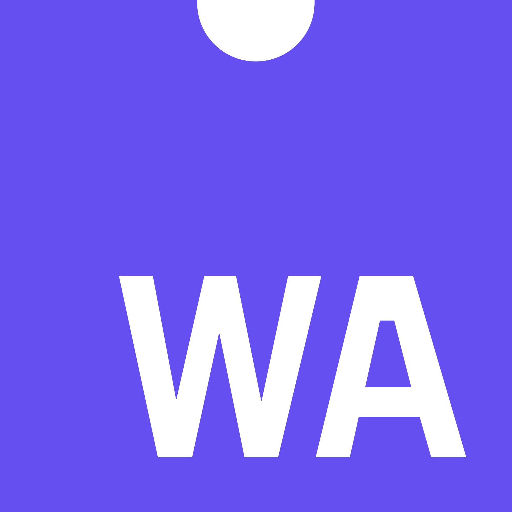

👷 Service Worker API
01
Service Worker API
It is the most important API in the last 10 years.
Service Worker is basically a proxy written in JavaScript that can intercept network requests.
Supported in every major browser.
Can and should be used in production.


Service Worker works only through 🔒HTTPS
(as almost all of the new APIs).
Service Worker should be used as a progressive enhancement.
if ('serviceWorker' in navigator) ...Service Worker can be used only in its scope
(Intercep requests).
navigator.serviceWorker.register('/sw.js')
.then(onSuccess)
.catch(onFailure);Service Worker has 2 lifecycle events.
self.addEventListener('install', onInstall);self.addEventListener('activate', onActivate);Each Service Worker runs in its own separate thread.
Service Worker doesn't have access to the DOM.
Service Worker can communicate with the main thread through messages.
self.addEventListener('message', onMessage);navigator.serviceWorker.controller.postMessage('message');function onMessage(event) {
self.clients
.matchAll()
.then(function(clients) {
sendResponses(clients, event.source.id);
});
}function sendResponse(client, id) {
if (id !== client.id) {
client.postMessage('message');
}
}function sendResponses(clients, id) {
clients.forEach(function(client) {
sendResponse(client, id);
});
}Service Worker can intercept network requests.
self.addEventListener('fetch', onFetch);function onFetch(event) {
event.respondWith(caches.match(event.request));
}function fetchedFromNetwork(response) {
var clonedResponse = response.clone();
caches
.open('app-cache')
.then(function(cache) {
cache.put(event.request, clonedResponse);
});
return response;
}👷 can work with:
Cache API (Offline support)
Notification API (Push notifications)
Background Sync API
Payment Request API
50% higher conversion
40% higher engagement
2× more active users
Full-featured desktop experience became a growth point
Uses sw-toolbox
On average 20% higher conversion.
App Shell
+
Service Worker
var files = ['/styles.css', '/scripts.js', '/l.svg'];
self.addEventListener('install', function(event) {
event.waitUntil(
caches
.open('cache-name')
.then(function(cache) {
return cache.addAll(filesToCache);
});
);
});- and a Service Worker — 225 ms
- without Service Worket — 625 ms
- 1 second load results in 11% less views and 16% drop in customer satisfaction.
- 53% of users leave the site if its load time is over 3 seconds.
- Network first.
- Cache first.
- Fastest — network or cache, whichever comes back first.
- Offline.
Service Workers can be used with AMP to leverage it's fast delivery network.
- AMP as PWA
- AMP to PWA
- AMP in PWA
AMP as PWA — AMP + Service Worker
When user opens a link he is served an AMP version of the article and a Service Worker.
Service Worker loads and caches content from the AMP server, while user is reading the article.
After caching has completed, user is served (instantly) content from the cache.
This pattern uses AMP-HTML. Ideal for static sites.
AMP to PWA — AMP + Service Worker + WebApp
When user opens a link he is served an AMP version of the content and a Service Worker.
Service Worker loads and caches app shell and initial data from the server.
When user clicks another link to navigate to another page he is taken (instantly) to the full-featured WebApp.
Backend has to serve content in 2 forms — as AMP-HTML and JSON.
AMP in PWA — WebApp + AMP (+ Service Worker)
WebApp hijacks navigation clicks and fetches AMP pages (and caches them using Service Worker).
AMP content is displayed using Shadow DOM inside the WebApp shell, so the whole page doesn't have to reinitialize with every navigation event.
Tools
- sw-precache - caching and maintaining app shell.
- sw-toolbox - caching strategies for the content.
- Workbox - tool library for PWA development.
Best 👏
Caching 👏
Practices 👏
Still 👏
Apply 👏
02
WebAssembly
WebAssembly is a compiler target for other languages.
- (P)NaCl ((Portable) Native Client)
- asm.js
Can and should be used in production.
- Bytecode (Resembles traditional assembly languages).
- Binary.
Features
-
Language-independent . -
Platform-independent . -
Hardware-independent .
Features
- Compact.
- Easy to generate.
- Fast to decode.
- Fast to validate.
- Fast to compile.
- Fast to execute.
Future Features
- Streamable.
- Parallelizable.
WebAssembly enables features that JavaScript can't support...
But 👏
It 👏
Doesn't 👏
Replace 👏
JavaScript 👏
⚡ Performance!!!
💥 Predictable 🔥 ⚡ Performance!!!!! 🤯

+

In browsers WebAssembly implemented in JavaScript engine.
Accessible through the WebAssembly global object.
Each WebAssembly module executes within a sandboxed environment separated from the host runtime.
WebAssembly module can't access main thread or DOM and is a subject to a web browser restrictions on information flow through same-origin policy.
WebAssembly organized as modules which have to be imported and instantiated.
var impObj = {
imports: { imported_func: arg => console.log(arg) }
};fetch('/module.wasm').then(response =>
response.arrayBuffer()
).then(bytes =>
WebAssembly.instantiate(bytes, impObj)
).then(results => {
results.instance.exports.exported_func();
});var impObj = {
imports: { imported_func: arg => console.log(arg) }
};WebAssembly
.instantiateStreaming(fetch('/module.wasm'), impObj)
.then(obj => obj.instance.exports.exported_func());- C
- C++
- Rust
- GO
- ...JavaScript (TypeScript through AssemblyScript)
High-level (???) languages will support WebAssembly in the future.
Already in Node.js
WebAssembly will be used for contracts in Ethereum.
Emscripten
Source to source compiler that produces WebAssembly.
Was used to port:
- Unreal Engine
- SQLite
- MeshLab
- Bullet Physics
- AutoCAD
03
Houdini
Most exciting development in CSS.
Exposes CSS rendering engine and allows developers to hook into it. In a way Houdini is very similar to the Shadow DOM and Custom Elements APIs.
Houdini is a collection of different APIs.
It's called Houdini because it's ✨CSS-magic✨.
Very-very early in standard development.
Everything changes all the time.
Very little browser support.
(Will be) accessible through the global object CSS.
Houdini APIs extend CSS through special worklets.
- Worklet runs in-sync with the browser rendering engine.
- Worklet has very limited scope and it's own thread.
- Worklet won't affect performance in the main thread.
- Worklet won't throw errors in the main thread.
- If a worklet runs too slow it may be skipped at rendering time.
Paint API
CSS Paint API allows you to programmatically generate an image whenever a CSS property expects an image.
- Adds new CSS function paint().
- Runs in-sync with CSS rendering engine.
- Very similar to a 2D Canvas API.
class BoardPainter {
static get inputProperties() {
return [
'--checkerboard-spacing',
'--checkerboard-size',
];
}
paint(ctx, geom, properties) ...
}
registerPaint('checkerboard', BoardPainter);
const size = parseInt(properties
.get('--checkerboard-size').toString());
const spacing = parseInt(properties
.get('--checkerboard-spacing').toString());
const colors = ['red', 'green', 'blue'];
const size = 32;
for(let y = 0; y < geom.height / size; y++) {
for(let x = 0; x < geom.width / size; x++) {
...
}
}const color = colors[(x + y) % colors.length];
context.beginPath();
context.fillStyle = color;
context.rect(x * size, y * size, size, size);
context.fill();if ('paintWorklet' in CSS) {
CSS.paintWorklet.addModule('checkerboard.js');
}@supports (background: paint(id)) {
.className {
background: paint(checkerboard);
}
}Properties and Values API
CSS Properties and Values API allows to register typed and animatable custom CSS properties.
document.registerProperty({
name: '--crazy-property',
syntax: '',
inherits: false,
initialValue: "1"
}); Typed OM API
Typed OM API exposes CSS values as typed JavaScript objects to facilitate their performant manipulation. Instead of strings developers will be working on an element's StylePropertyMap, where each CSS attribute has it’s own key and corresponding value type. Solves the problem of performance overhead when converting strings into CSS values and back.
<div style="margin: calc(5em + 50%);"></div>const node = document.querySelector('div');
const margin = node.styleMap.get('margin');
console.log(margin) // {em: 5, percent: 50}node.attributeStyleMap.set('margin', CSS.px(10));- CSSUnitValue — 10px
- CSSMathValue — calc(10% - 20px)
- CSSTransformValue — translate3d(10px, 10px, 0)
- CSSVariableReferenceValue — --prop
- CSSKeywordValue — initital
- ...
Animation API
(Composited Scrolling API)
CSS Animation API lets developers to hook into the compositing process for a certain DOM node and request access to certain attributes like scroll position, transform or opacity.
- Runs in-sync with CSS composing engine.
class SyncScroll {
animate(root, children) {
...
}
};
registerAnimator('sync-scroll', SyncScroll)var input = children
.filter(e =>
e.styleMap.get("--scroller") == "input")[0];
var outputs = children
.filter(e =>
e.styleMap.get("--scroller") == "output");
outputs.forEach(e => {
e.scrollOffsets.top = input.scrollOffsets.top;
e.scrollOffsets.left = input.scrollOffsets.left;
});.main_scroller {
animator: sync-scroller;
--scroller-type: input;
}
.alt_scroller {
animator: sync-scroller;
--scroller-type: output;
}Layout API
CSS Layout API is will enable developer to arrange a node's children in the node's box.
- Adds new CSS function layout().
.element {
display: layout('masonry');
}Font Metrics API
CSS Font Metrics API allows developers to control font rendering to a certain degree.
Parser API
CSS Parser API performantly converts CSS strings into CSS Typed OM objects.
04
...
- Variable Fonts
- Notifications API
- Background Sync API
- Payment Request API
- OffscreenCanvas API
- Picture in Picture API
- Intersection Observer API
- WebVR API
- WebUSB API
- Web Bluetooth API
- Web Share API
- Push API
- Geofencing API
- Presentation API
- Font Loading API
- ...